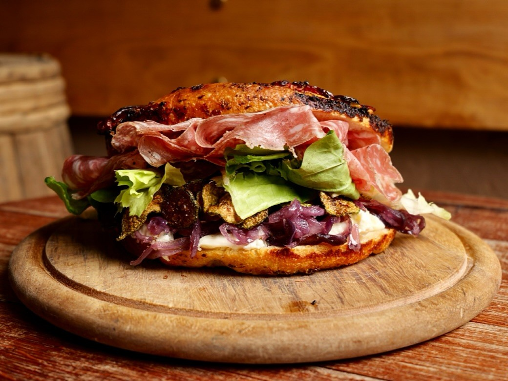

AC
@alessia.cooks
Published 2h ago - Torino
Focaccia Barese with Cherry Tomatoes
Crispy outside, super soft inside. Ready in 45 minutes.
Experience a true taste of Puglia with this Focaccia Barese sandwich. We’ve
turned that legendary golden crust into the ultimate vessel for a Mediterranean feast.
- Stracciatella cheese for a creamy base.
- Caramelized Red Onions for a touch of sweetness.
- Crispy Fried Zucchini adding a savory crunch.
- Salame and fresh greens to round out the bite.
Pro Tip Make sure your oven is screaming hot—at least 250°C—to get that authentic "bakery-style" bottom crunch!

45 min
4 servings
Medium
#apulianfood
Ingredients
- 350g flour
- 250ml warm water
- 100g boiled potatoes
- 8g fresh yeast
- 300g cherry tomatoes
- Extra virgin olive oil
- Oregano, salt
Steps
- Mix flour, yeast, water, and salt until smooth.
- Let it rise for 2 hours, then spread in an oiled tray.
- Press tomatoes into dough and add oregano plus olive oil.
- Bake at 250°C for 20-25 minutes until golden.
Leave a comment
Share feedback, a variation, or your cooking result.